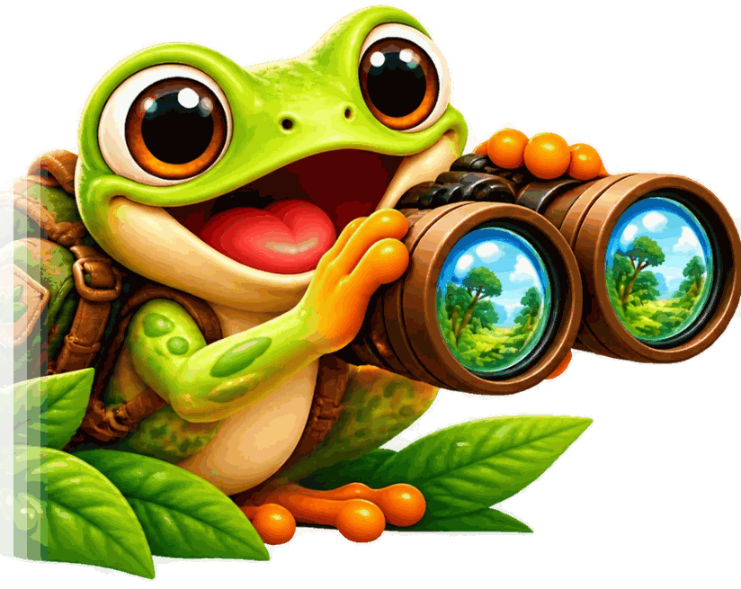
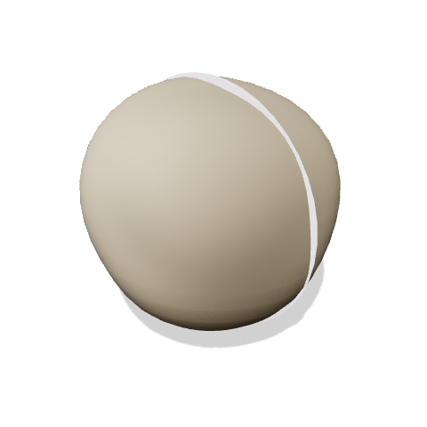
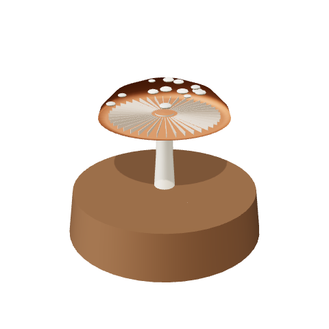
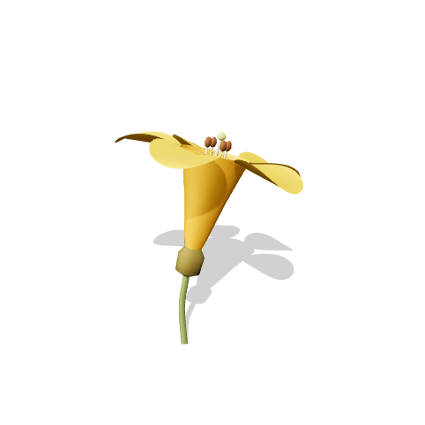
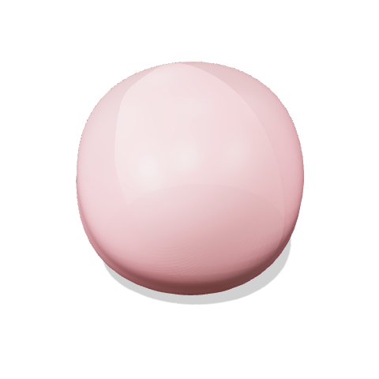
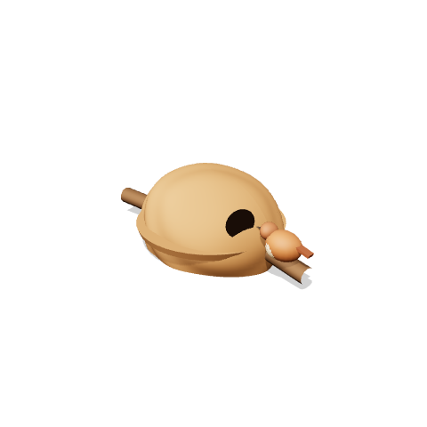
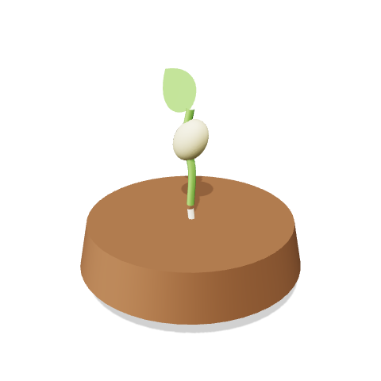
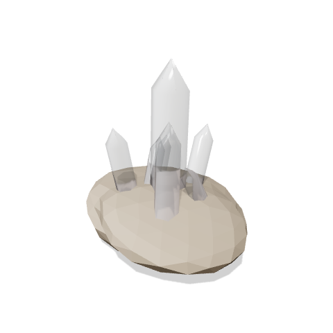
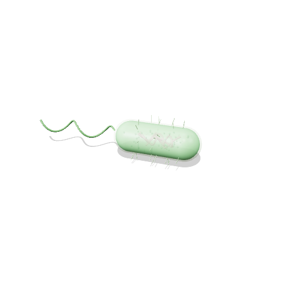
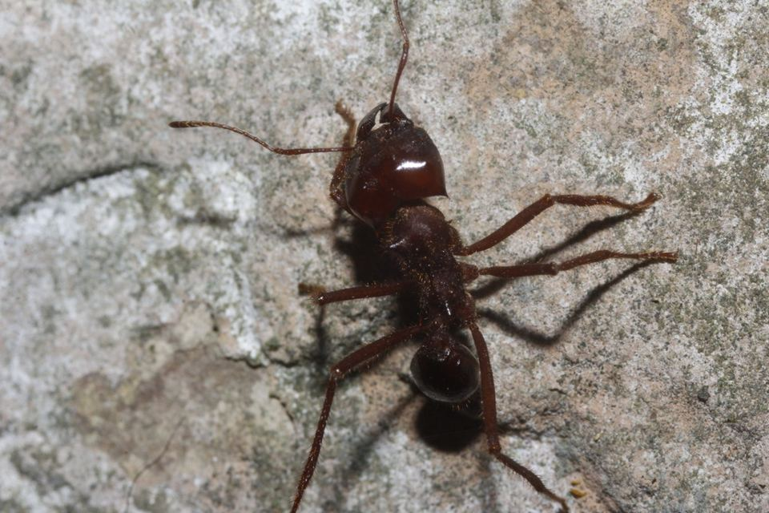

Um mundo de vida no seu bolso.
Gire, aproxime e descubra a natureza em 3D: bichos, plantas, pedras e o micromundo.
- Grátis para começar
- Sem anúncios
- Seguro para crianças

Olá! Eu sou o Curu.
Vamos descobrir quem vive por aí?
Biblioteca 3D
Plantas, pedras, ninhos, fungos e o micromundo. Gire, aproxime e toque em cada parte.

Geodo de ametistaAbra e veja os cristais
CogumeloSolte os esporos
Flor do ipêAche o pólen
Célula animalCorte ao meio
Casa do joão-de-barroEspie o quarto dos ovos
Feijão germinandoFaça a semente brotar
Cristal de quartzoAcenda a luz
BactériaVeja o flagelo girar16Ver tudoe os bichos em 3DQue bicho você quer conhecer?
Comece sua descoberta
Escolha um bicho para conhecer.
Viu um bicho por aí?
Conte qual bicho você encontrou e ganhe a carta dele no seu bolso.
Observe sem tocar e chame um adulto. Em breve: tirar uma foto para descobrir quem é.Novo bicho no bolso!
Encontre → descubra → ganhe a carta → complete o Meu Bolso.
- 1Encontre
- 2Descubra
- 3Ganhe a carta
- 4Complete coleções
Coleções

Explore em 3D
Gire. Aproxime. Veja de pertinho, sem chegar perto.
Mais bichos para descobrir
Fotos reais, ciclo de vida e curiosidades de cada um.
Nenhum bicho encontrado com esse nome.
Feito para pequenos curiosos. Pensado para famílias.
Transforma curiosidade em descoberta: experiências educativas, atividades no mundo real e conteúdo apropriado para crianças.
- Sem anúncios
- Sem perfil infantil público
- Nada da criança é coletado
- Funciona até sem internet
É professor ou escola?
Transforme o pátio em laboratório. Explore espécies com a turma, faça missões no pátio e monte descobertas juntos.
- Roteiro de aula ligado à BNCC
- Funciona nos iPads da escola, sem instalar
- Álbum coletivo da turma (em breve)
Comece sua aventura
Explore bichos gratuitamente e faça sua primeira descoberta.